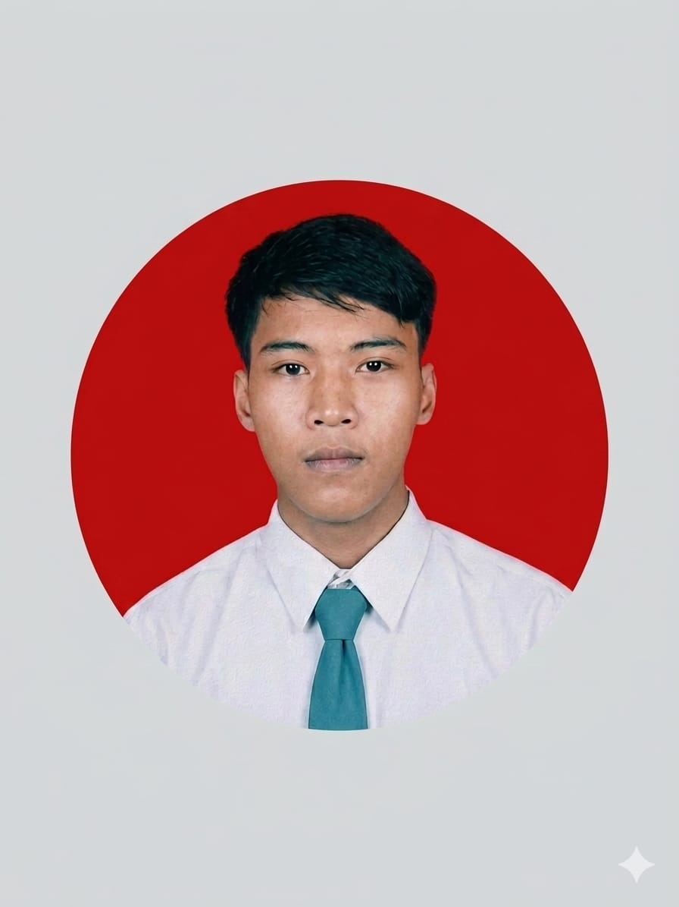

Sistem Komputer Student | Professional Operator
Tanggal Lahir:
04 Februari 2007
Alamat:
Kp. Nyompok Tengah, RT/RW 03/03, Desa Nyompok Kec. Kopo Kab. Serang Banten.
Profesional yang disiplin, bertanggung jawab, dan memiliki kemampuan komunikasi serta kerja sama tim yang baik. Mampu bekerja secara efektif, cepat beradaptasi dengan lingkungan baru, serta memiliki semangat tinggi untuk terus berkembang dan memberikan hasil kerja terbaik. Saat ini sedang aktif menempuh kuliah S1 Sistem Komputer di Universitas Pamulang Kota Serang.
Bertanggung jawab dalam manajemen keluar masuk barang, melakukan pengecekan kualitas produk (*quality control*), serta menjaga kerapian dan efisiensi penataan inventaris gudang.
Bekerja di lini perakitan komponen elektronika dengan target harian yang ketat, mengutamakan ketelitian tinggi, keselamatan kerja, serta koordinasi tim yang solid.
Sedang menempuh pendidikan tinggi untuk mendalami arsitektur komputer, perangkat cerdas (*embedded system*), jaringan, serta administrasi server Linux.